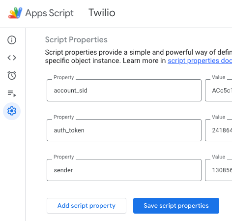

Sending SMS messages directly from a Google Sheet is both easy and useful. Let's assume that we have a Google Sheet that gets populated with phone numbers of people that we'd like to contact via an SMS message. In this post we will see how to implement a solution using Google Apps Script.
The first thing we need to do is sign up for an SMS messaging service. There are many providers out there that you could choose from. For the purpose of writing this post, I chose to use Twilio. Their API is pretty straightforward, and the documentation is good.
After you create a Twilio account, you need to create a Twilio phone number. Once you do that, you should be set up with a Twilio Account SID, an Auth Token, and a phone number. You need these three pieces of information in order to send ous SMS messages programmatically.
If you are on a trial program on Twilio, you will need to verify at least one phone number that will serve as a recipient of the message. You need to verify a phone number when you create the Twilio account, so you can use that number as the recipient.
Next, create a new Google Sheet. Set its tab name to SMS, and add two headers in the first row: Phone and Sent
The script below will look for phone numbers in Column A that have empty cells in column B. I do this to avoid sending multiple messages to the same phone number.
We should store the Twilio Account SID, Auth Token, and phone number as script properties in Apps Script so that they are a bit more secure. To do so, open Google Apps Script from within the sheet, click the gear icon on the left side, scroll down to the Script Properties section, and click Edit script properties. Enter the property names as you see in the image below, and for each property paste the corresponding value from the Twilio console. Click Save script properties when you're done.
The script itself is pretty simple. First, we pull our script properties to global variables, so that we can use them later in our API calls:
const scriptProps = PropertiesService.getScriptProperties();
const ACCOUNT_SID = scriptProps.getProperty('account_sid');
const AUTH_TOKEN = scriptProps.getProperty('auth_token');
const SENDER = scriptProps.getProperty('sender');In the three getProperty() methods we pass in the property names exactly as we defined them in the Script Properties section.
Next we create a function that we will run to fetch new phone numbers and message them:
function sendNewSMS() {
// Get the current spreadsheet
const ss = SpreadsheetApp.getActive();
// Get the sheet with the phone numbers
const sh = ss.getSheetByName('SMS');
// Get all the data from the tab
const data = sh.getDataRange().getValues();
// Remove rows that already have a sent message in column B
const recipients = data.filter((row) =>
row[1].toString().trim().length == 0);
// Ensure there is at least one phone number to message
if (recipients.length == 0) {
console.log('No new recipients');
return;
}
// Iterate over the row
recipients.forEach((recipient) => {
// Get the phone number from column A
const to = recipient[0];
// Pass the phone number to the SMS function
const message = sendSMS_(to);
// Find the row of the phone number in the sheet
const rowIndex = data.findIndex((row) => row[0] === to) + 1;
// Populate column B of the row with the send confirmation
sh.getRange(rowIndex, 2, 1, 1).setValue(message);
});
// Force update to the spreadsheet
SpreadsheetApp.flush();
}We simply iterate over the rows in our sheet, pull out phone numbers that haven't been contacted yet, trigger the SMS function for each phone number, and mark the phone in the sheet as being contacted.
The last piece of code is the function to send the actual SMS request to Twilio:
function sendSMS_(recipient) {
// Construct the API URL using you Twilio Account SID
const url = `https://api.twilio.com/2010-04-01/Accounts/${ACCOUNT_SID}/Messages.json`;
// Construct the API authorization string
const authString = `${ACCOUNT_SID}:${AUTH_TOKEN}`;
try {
// Create the options object of the fetch method, including the headers and payload
const options = {
method: 'post',
headers: {
Authorization: `Basic ${Utilities.base64Encode(authString)}`,
},
muteHttpExceptions: true,
payload: {
From: `+1${SENDER}`,
To: `+1${recipient}`,
Body: 'Hello, world!!',
},
};
// Fire the request and capture the response
const resp = UrlFetchApp.fetch(url, options);
const json = resp.getContentText();
// Return the response so that it can be marked in the Google Sheet
if (!json.error_message) {
return `Sent: ${Utilities.formatDate(
new Date(),
'PST',
'yyyy-MM-dd HH:mm:ss'
)}`;
} else {
return `Error: ${json.error_message}`;
}
} catch (err) {
return `Error: ${err}`;
}
}The sendSMS_function receives the recipient's phone number. It first constructs the URL and authorization string for the API. It creates the options object, as well as the payload, which includes your Twilio phone number as the From, your verified phone number as the To and whatever message you want to send in the Body.
The function then sends the request, verifies that there is no error message in the response object and returns a message to be recorded in the sheet.
I've found the Twilio SMS API to be a good tool to send messages directly from Google Sheet.